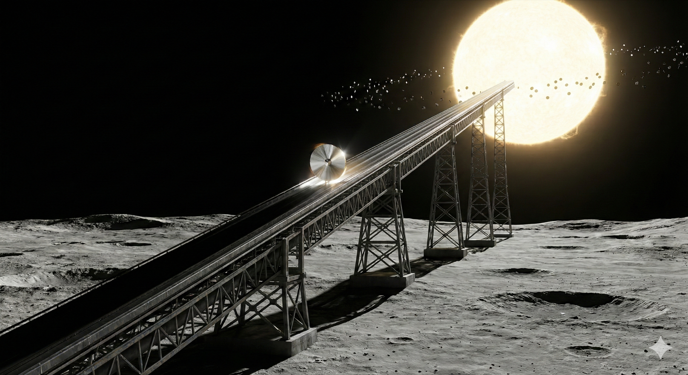

High Offices
Moscow. February 2026.
Valery Petrovich stepped out of the elevator on the seventh floor. The corridor was empty—light gray walls, carpeted runner muffling footsteps, and floor-to-ceiling windows. Beyond the glass lay Moscow: leaden sky, wet snow, rooftops merging into one endless gray mass. The sun hadn’t appeared for three weeks now. February this year was particularly heavy—not cold, but heavy, oppressive, as if the city had been covered with a wet blanket.
He stopped at the window. Below, on Tverskaya Street, cars crawled—slowly, wearily, like blood through old veins. The city lived, but didn’t burn. Worked, but didn’t dream. Valery knew this feeling. He had lived in it for sixty-five years. And today he was going to offer the people sitting behind that door a way to change it.
His entire life had been a history of compromises. In the eighties, when he first joined the design bureau, young and burning with passion, he drew lunar bases—but they had him designing communications satellites. “The Moon can wait,” his boss would say, “the country needs television.” In the nineties, when everything was collapsing, he wrote a program for a Mars expedition—but they sent him to launch commercial satellites for foreign clients. “Mars isn’t going anywhere,” they told him, “but we need hard currency now.” In the two-thousands, he developed a concept for orbital power stations—but built modules for the ISS, which was barely making ends meet as it was.
They always gave him work. Good, necessary, proper work. But never—the dream. The dream was always postponed. For later. For someday. For never.
Sixty-five years. How much time remained? Ten years? Fifteen, if lucky? This was his last chance. Not for the project—for himself. If they refused now too, if these people behind this door also said “interesting, but untimely”—then his entire life had been a draft. A draft that never became a book.
Valery looked at his reflection in the glass. Gray hair, tired face, bags under his eyes. His body begged for rest. But somewhere inside, behind his ribs, burned something that wouldn’t let him stop. He called it “the spark.” His wife called it “obsession.” Perhaps both were right.
He turned from the window and walked toward the door with the sign “Strategic Planning Committee.”
Semyonov was waiting by the door. Alexey Ivanovich stood with his hands clasped behind his back, looking out the window—exactly as Valery had been looking a minute ago. Hearing footsteps, he turned around.
“You came,” he said instead of a greeting. His voice was level, but Valery had known him for forty years and heard what others wouldn’t: tension.
“Lyosha,” Valery stopped beside him. “Thank you for arranging this.”
“Don’t thank me yet. There’s nothing to thank me for yet.” Semyonov adjusted his glasses. “I vouched for you, Valera. Said you weren’t crazy. That you were worth listening to.”
“And?”
“And if you screw this up, it’ll be my mistake too.” He paused. “Are you sure about the numbers?”
“Lyosha, you and I saw in eighty-six what happens when numbers lie. I checked everything. Three times.”
Semyonov nodded. Something in his face softened—for a second he became again that thirty-year-old engineer with whom they had walked out of the exclusion zone together, gray with dust and fear.
“All right. Let’s go. They’re waiting.”
He pushed the door open.
Valery stood at the screen. The figure $0.0001—the cost per kilowatt-hour for which he had come here. Next to it—a graph with two lines.

“Look—two lines,” he began, pointing at the screen. “Red is global energy consumption. Blue is Earth’s population. For a thousand years, both crawled along the bottom. Then coal—and both shot up. Oil—even higher. Nuclear power… And now look at the right edge. Both are slowing down.”
He swept his gaze across the committee.
“But population isn’t the main thing. The main thing is what’s behind it. Technology. Economy. Progress. Each energy transition gave civilization a leap forward. Coal—the industrial revolution. Oil—automobiles, aviation, the green revolution in agriculture. Nuclear power—space, computing, globalization. And now we’ve hit a wall. Without the next transition—stagnation. Not in a hundred years. Right now. And this figure,” he pointed at $0.0001, “is the only way to break through the ceiling.”
Five people sat before him. “The Budget Man”—deputy minister of finance, young and pragmatic technocrat interested only in numbers and reports. “The General”—a burly man, defense industry overseer, whose civilian suit was clearly ill-fitting. Academician Semyonov sat on the right—face impenetrable, eyes on the papers. And two more officials whose names Valery hadn’t remembered. Just extras.
“Valery Petrovich,” sighed the Budget Man, tapping an expensive stylus on his tablet. The sound was annoying, like dripping water. “We have a schedule. You promised to present ‘Strategy-2050,’ and I’ve been listening to a lecture on astrophysics for fifteen minutes. Tomatoes in Yakutia, free water in Africa… It’s all very touching. But let’s come down to earth. How much does it cost? And most importantly—when will it pay off?”
Valery looked at the bored faces. He understood he was losing. His back hurt, but he forced himself to stand straight.
“This price is impossible on Earth,” he pronounced quietly but firmly. “Neither nuclear fission nor burning gas will give such a cost. To achieve it, we must stop burning our planet’s fossil past. We must connect directly to the primary source. To the main thermonuclear reactor that holds our entire system in its orbit and throws more energy into the void every second than we’ve consumed in all of history. It won’t cost the budget a kopeck in the long term,” he added, “if we stop thinking in quarterly reports and start thinking in centuries.”
“I don’t have centuries,” the Budget Man interrupted harshly. “I have a budget deficit now. I have social obligations now. You’re proposing to invest trillions in a project that will deliver first power… when? In thirty years? Fifty?”
“In eighteen years,” Valery answered firmly. “If we start today.”
“Eighteen years?” Semyonov removed his glasses and exhaled noisily, rubbing the bridge of his nose. “Valera, let’s be realistic. We’ve been building ITER with the whole world for thirty years already, and even the plasma doesn’t burn properly there. And you’re talking about industrial construction in an aggressive environment, millions of kilometers from Earth. You’re proposing to transmit energy through the atmosphere? In such volumes? We’ll simply boil the sky. It’s physically impossible.”
Valery nodded—the objection was obvious.
“We don’t yet know which exact path will work best,” he admitted honestly. “But there are at least three promising technologies, and one of them will definitely work.” He bent one finger. “First: space elevator. A cable from geostationary orbit to the surface. Energy goes through the wire, no radiation, no atmospheric heating. The problem is the cable material. Carbon nanotubes promise the necessary strength, but mass production hasn’t been mastered yet.” Second finger. “Second: laser transmission. We split the beam into thousands of thin streams, each safe by itself, but they converge at the focal point. Adaptive optics corrects atmospheric distortions in real time. The Japanese have already demonstrated prototypes.” Third finger. “Third: microwave transmission. Microwave radiation, rectennas on the surface—antennas that directly convert radio waves into electricity. Frequencies are selected to pass through clouds and rain without losses. This scheme was worked out back in the seventies, the technology is mature.”
He spread his hands.
“I can’t tell you today which option will win. But when we have petawatts in orbit—an engineering solution will be found. The history of technology proves this: first the energy source appears, then the ways to use it.”
“I propose you stop counting money and start counting joules,” Valery switched slides. A world map appeared on the screen. But not a political one. A resource map. “Colleagues, do you understand that water scarcity doesn’t exist? It’s a fairy tale for the poor. Earth is flooded with water. But we don’t drink it because pushing it through a membrane costs 10 cents per kilowatt. Remove the energy price—and you’ll turn the Sahara into a breadbasket that will feed half the world. You talk about food security? With free energy, we can grow wheat in the mines of Vorkuta or at the bottom of the Mariana Trench.”
“You’ll crash the markets we earn from,” the Budget Man noted dryly.
“We’ll rewrite the very architecture of the economy!” Valery’s voice filled with steel. “We’ll move from managing scarcity to managing abundance. You ask what doors this will open? Look.” He pressed the button. Slides flashed faster. “This isn’t just cheap light. This is complete transmutation of matter. Plasma gasification of waste. Five thousand degrees. Any plastic, any toxins, radioactive waste—everything breaks down into atoms. We’ll clean the planet in one generation. Terraforming. We can not just warm up Mars. We can give it what nature denied—a magnetic field. We’ll encircle the planet with a superconducting ring and run a current so powerful it will create an artificial magnetosphere capable of protecting the atmosphere from solar wind. This is impossible without external power. Stars. On chemical rockets, we’ll fly to Alpha Centauri for thousands of years. But if we have petawatt lasers, we can blow into solar sails, accelerating ships to 20% of light speed. We’ll get there in one generation. We’ll stop being an ‘oil civilization.’ We’ll become a ‘stellar civilization.’”
The General, who had been silent until now, drawing something in his notebook, heavily raised his head. His gaze was heavy as a concrete slab. “Beautiful picture, Valery Petrovich.” His voice was level, but metal rang in it. “Only you forgot to mention one detail. A system capable of transmitting petawatts of energy is also capable of burning a carrier group in seconds. Intercepting a ballistic missile while still in its silo. Nullifying any nuclear retaliation scenario.” He swept his gaze across those present. “Whoever builds this first gets an absolute weapon. Forever. There won’t be a second place in this race.”
“That’s precisely why this can’t be one country’s project,” Valery paused. This was the most dangerous moment of the presentation. “Any power that tries to build this alone will face a coalition of all the others. The stakes are too high. Too dangerous.” He switched slides. An orbital station appeared on screen, surrounded by flags of different countries. “The only way is an international consortium. Like CERN, like the ISS, only larger. Joint control. Joint responsibility. No one has ‘the button’—or everyone does.”
“Beautiful words,” the General chuckled. “But in practice? Who will command? Who will decide where to direct the beam?”
“That’s a question of architecture,” Valery answered. He switched slides. A diagram appeared on screen with five sectors, each a different color. “Look. Not a single country in the world possesses all the necessary competencies. This isn’t a weakness—it’s insurance.”
“Russia. We have the world’s best heavy launch vehicles and sixty years of experience in long-duration space missions. The ISS still flies on our modules. But most importantly—nuclear technologies. Compact reactors already working on underwater vehicles and cruise missiles. Plus unmanned systems—we’ve learned to control swarms of drones in conditions where operator communication is impossible. This is critical for autonomous work in Mercury’s orbit, where signal delay is minutes.”
“China. Manufacturing power no one else has. They can stamp out millions of identical components with micron precision. Sixty percent of the world’s rare earth metals—theirs. Without neodymium and dysprosium, there will be neither magnets nor electronics. And AI—Chinese neural networks are already on par with American ones, and ahead in some areas.”
“USA. Reusable heavy rockets—SpaceX has reduced launch costs tenfold. Robot training environments, digital twins, everything NVIDIA does. Deep space mission experience—they’re the only ones who’ve landed people on the Moon. And financial markets—without Wall Street, you can’t raise a trillion dollars in private investment.”
“India. They landed a probe on the Moon cheaper than Hollywood makes a movie about space. Budget engineering is their specialty. Plus one and a half billion people and the world’s best IT talent after America.”
“Europe. Scientific missions, the most precise instruments, quality standards the whole world copies. And experience—they built Ariane, they’re ISS partners.”
Valery swept his gaze across the committee. Inside, everything compressed. Now they would finish him off. He had never been strong in politics—all his life he believed that for a sufficiently great goal, people could reach agreement. That before the face of the stars, flags lose meaning. But the faces before him said otherwise.
“Let’s suppose,” the Budget Man shook his head. “Suppose they agreed. Suppose the world didn’t burn in nuclear war from fear.”
“Leave politics aside!” Semyonov interjected, leaning forward. His face reddened. “Physics, Valera! Engineering! You’re talking about starting production on a bare planet. To start smelting furnaces, you need megawatts. Immediately. You’re not going to haul batteries there. The only option is to drag our nuclear reactors there. But we don’t have ready portable installations of such power capable of working in vacuum! And that’s not all.” He bent a finger. “Self-replication. You say robots will build robots. But how? In vacuum you can’t weld metal—it doesn’t melt, it sublimates. You can’t cast, can’t stamp. Any liquid instantly boils. How are you going to organize production?”
Valery allowed himself a barely noticeable, weary smirk. This question was also predictable.
“Taking a nuclear reactor to the Sun, Alexey Ivanovich, is like hauling firewood to a burning forest.” He smoothly spread his hands. “At that orbit, light flux density is about six and a half times higher than in Earth’s tropics. We don’t need nuclear—we need light reflective foil. First thing, robots will deploy a cascade of concentrating mirrors, and within twenty-four hours after landing we’ll have megawatts of clean power.”
He switched slides.
“As for vacuum—we won’t be working in vacuum. The first dome goes up in a week. Inflatable shell, regolith on top for radiation protection, inside—atmosphere. Not oxygen, we don’t need people there. Argon or nitrogen under pressure. In this environment you can weld, cast, stamp—everything like on Earth. Only gravity is lower, and that’s even a plus: less load on structures, easier to manipulate heavy parts.”
“And electronics?” Semyonov persisted. “Chips? Sensors? You’ll produce those there too?”
“No,” Valery answered honestly. “Electronics, optics, precision mechanics—we ship all that from Earth. We call it ‘vitamins.’ Compact, lightweight, expensive components without which the robot won’t work. And on site we make only the ‘heavy stuff’: bodies, frames, supports, mirrors, cables. Ninety-nine percent of a robot’s mass is metal and glass. Mercury has those in abundance. We reduce cargo flow from Earth by hundreds of times. We ship kilograms of chips—we get tons of finished machines.”
He felt a wave rising inside—that same “spark” his wife called obsession. His voice strengthened.
“And this is just the beginning. When the first factory reaches full capacity, it will start building a second. Then a third. Robots will create robots—each new machine already trained in virtual reality, in fully recreated Mercury conditions. We’re not sending just iron there—we’re sending seeds. And they will sprout.” Valery clicked the slide. A map of Mercury appeared on screen, covered with spreading spots. “After seven years of active phase, the planet will be covered with steel mold. Millions of factories. Hundreds of millions of robots. Exponential growth.”
He switched slides.
“In parallel, factories build mass drivers. Electromagnetic catapults.” Valery waved his hand as if launching something into the sky. “Mercury has no atmosphere. We accelerate mirrors on rails and spit them into orbit around the Sun. No rockets. No fuel.”
He switched slides. An animation appeared on screen: giant foil disks, spinning like frisbees, tore from the rails and went into the black sky.

“Each mirror is just a sheet of foil the size of a football field. Rotation stretches it like a drum. At the edges—strips of electrochromic material: turn on—mirrored, turn off—transparent. Light pressure on different edges creates torque.” He showed with his hands how the disk turns. “No engines, no fuel. Control—a coin-sized chip at the center. We use the light itself to direct the mirrors that collect that light.”
He switched slides. A swarm of rotating disks surrounded the Sun, and thousands of beams converged at one point—on Mercury’s surface.
“Mirrors focus light back to the factories. More energy—faster growth—more mirrors—even more energy. Positive feedback. Exponential growth of power.” He paused. “And in parallel we transmit energy to Earth. Supply the entire Solar System. Moon. Mars. Asteroids. Throw cargo there like stones from a slingshot!”
Valery stopped. He was breathing heavily. His cheeks burned. He had blurted out everything—everything he’d accumulated over the years, everything that kept him awake at night, everything for which he’d come to this office. He looked at the faces around the table.
“But how do you transmit energy to Earth?” Semyonov leaned forward. “You’re not going to stretch a cable through space.”
Valery smiled—finally the right question.
“Three hops.” He raised three fingers. “First: the mirror swarm forms a phased array. Thousands of satellites synchronize and work as one antenna a hundred kilometers in diameter. On such a baseline the beam barely spreads—infrared laser goes through vacuum without losses.”
He switched slides.
“Second hop: the beam arrives not at Earth—at a Hub Station in geostationary orbit. Thirty-six thousand kilometers.” Valery tapped his temple. “Can’t go direct: Earth rotates, Mercury moves, the angle constantly changes. And if a beam of such power misses…” he didn’t finish. “But this way—if something goes wrong, we turn off the Hub, the beam goes into empty space.”
“And from orbit down—those same options we discussed. Elevator, laser, or microwave.” Valery nodded. “Still not clear which will win. But that’s just details.”
Semyonov frowned.
“But here’s what we know for sure,” Valery leaned forward. “When we have petawatts in Earth orbit—that’s already a different civilization. Orbital factories that don’t need to haul fuel. Stations that never shut down. Even without descent to the surface—this is revolution. An evolutionary leap.”
The Budget Man looked at his tablet. The General drew something in his notebook. One of the extras openly yawned. Even Semyonov—Lyosha, the friend who brought him here—averted his eyes.
Silence hung heavy as a concrete blanket.
“Nonsense,” the Budget Man cut off and snapped his folder shut. The sound rang out like a gunshot. “I’m sorry, Valery Petrovich. We have sequestration, we need to close holes in healthcare, we need to build roads. And you’re asking for billions for science fiction.” He didn’t even try to hide his contempt. “The state isn’t a venture fund.”
The General rose heavily, leaning his fists on the table. “You know what scares me most?” his voice became quieter but not weaker. “Not your mirrors. Not the budget.” He slowly swept his gaze across those present. “We’ve spent almost eighty years building a world on a simple idea: no one will press the button because everyone will die. It worked. And you want to put the switch in space—and believe three powers will agree not to flip it.” He paused. The silence became palpable. “What if one of them decides it can flip faster?”
Chairs creaked. The General headed for the exit. At the door he turned: “I have a meeting at the General Staff.”
People began to rise, gathering papers, talking about something mundane, as if Valery were no longer there. He felt everything inside plunge into an icy abyss. He had lost again. They hadn’t heard. They saw the estimate but didn’t see the Future. For them 18 years was eternity. For them an alliance was a threat, not an opportunity.
Valery began slowly shutting down the laptop. His fingers wouldn’t obey. He felt like an ancient old man trying to explain the wheel’s design to barbarians.
“Leave the flash drive.”
The voice sounded quiet but cut through the noise in the hall. The fifth man spoke. That very “gray cardinal,” Advisor to the Administration Head. For the entire two hours he hadn’t uttered a word, just twirled an ordinary pencil in his hands. He sat in shadow, in the corner of the table.
“What?” Valery asked, not believing his ears.
“Leave the materials,” the man nodded to his assistant, a young guy with a laptop who looked at Valery with a mixture of pity and curiosity. “Seryozha, take it.”
“You… you’re interested?” a spark of hope flashed in Valery’s voice, painful and sharp.
The man smirked. The smirk was cynical, weary, but a predatory gleam flickered in his eyes. “Don’t flatter yourself, professor. This all sounds like a madman’s ravings. Disassembling Mercury for parts… International consortium with a shared button…” he shook his head. “There are more political risks here than atoms in the Universe.” He stood, straightened his jacket. The pause was brief, but Valery noticed—the man was calculating something, and it wasn’t about physics. “But if this works—we need to know first. Can’t afford to find out last.” He turned to his assistant. “Seryozha, give it to ‘Vector.’ Let them look. Run the harshest model. Let them look for errors. I’m giving them a week.”
The door closed. Valery Petrovich remained in the empty hall. He heard the hum of the cooling projector fan. On screen, the inscription slowly faded: “Project Helios. Purpose: Life.”
He exhaled, removed his glasses, and smiled for the first time that day. This was “no.” But it was “no” with a note “check it out.” And you can’t fool physics. If they check honestly—they’ll be back.